See safe parking at a glance.
Pan the map. Curbs turn red-to-green by time left before the next sweep. Tap to save — and curbwise warns you fifteen minutes before the truck rolls.
Free, and no account to make. Curbwise Plus is optional — $1/month or $10/year.
Why curbwise
- Apple & Google show you where you parked. Curbwise warns you when to move.
- Color-coded curbs — red, orange, green — so safe spots pop without reading every sign.
- Street sweeping and posted hourly limits in one map, both alerted before the ticket lands.
- The part that saves you a ticket is free. Plus adds extra cars, sharing, and earlier warnings.
A look inside
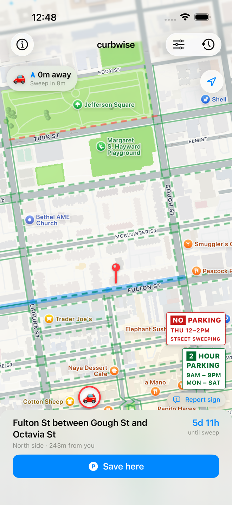
1. Glance — curbs painted red → green by how long you can park.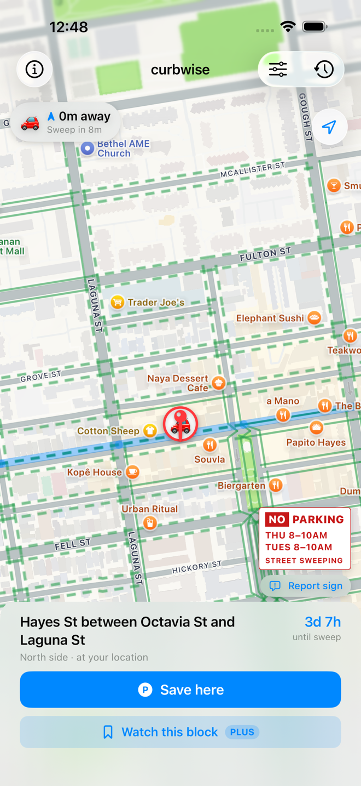
2. Park — the pin lands on your curb, one tap to save.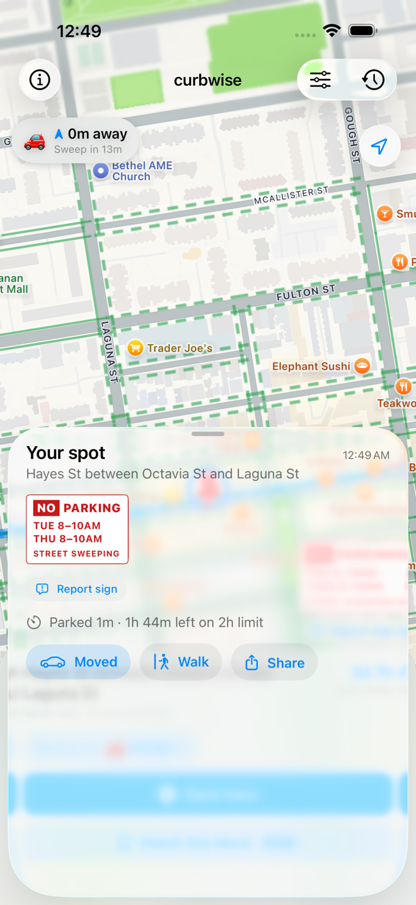
3. Your spot — the posted sign, the clock, and the walk back.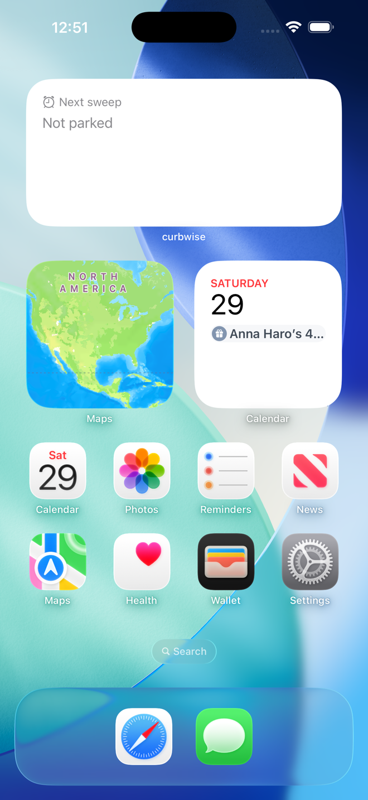
4. Get warned — before the limit, not after the ticket.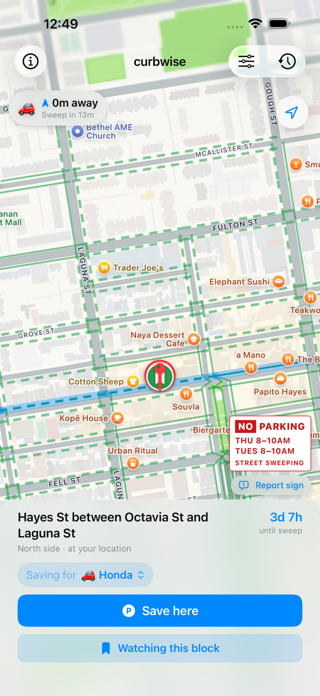
5. Watch a block (Plus) — claim it the moment it's swept.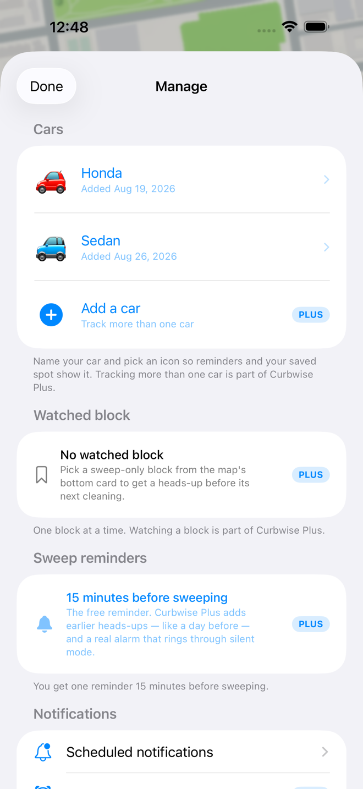
6. Plainly marked — every paid row wears a PLUS badge.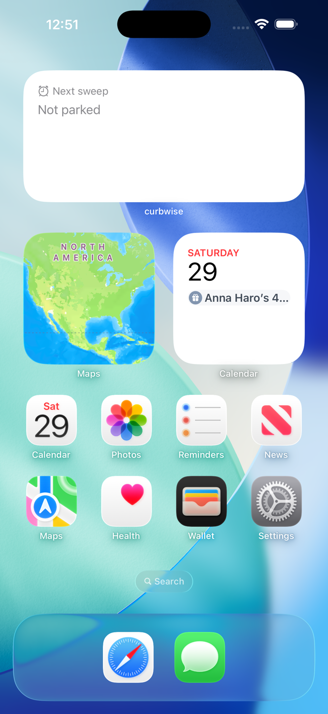
7. Home Screen widget — countdown + block at a glance.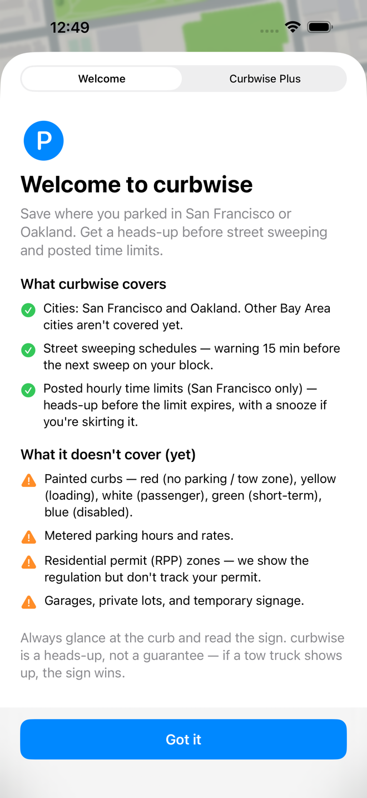
8. Honest onboarding — what we cover, what we don't.On your wrist
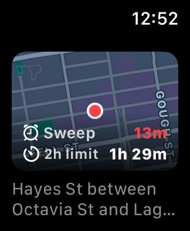
Your spot — the countdown, over the block it belongs to.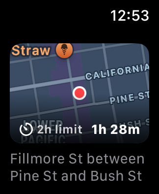
Hourly zones — time left before the posted limit is up.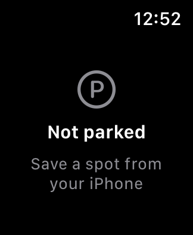
Not parked — save from your phone, see it here instantly.What you get, free
One tap to save
The home screen is a map with a pin at its centre. Pan until the pin sits on your curb, check the schedule on the card below, and tap Save here.
Sweep warning
A notification fifteen minutes before street sweeping starts on your block — time-sensitive, so it breaks through Focus and Do Not Disturb.
Time-limit warning
For posted hourly zones (typically 2 hours, Mon–Sat), a heads-up before the limit is up. Tap "Snooze 1 hour" if you're skirting it. San Francisco only — Oakland doesn't publish that data.
Find a spot nearby
Glance the map. Red curbs sweep within hours, orange within a day, green beyond that. Tap a curb — or just let the pin rest on it — and curbwise traces how far that same rule runs down the street, so you can see where the safe stretch ends. The bottom card shows the precise time and a one-tap save.
Apple Watch
The next-sweep countdown on your wrist, laid over the block you parked on, plus a complication for your watch face — including the corner slots on Infograph faces, where the countdown curves around the bezel and takes its colour from how little time is left. Syncs from your iPhone automatically.
Home Screen widget
Countdown to the next sweep with a small map of your block. Pick which car it tracks, or point it at the next sweep across all of them.
Built for the car
Full CarPlay support in both cities. Nearby blocks come up on the car's screen ranked by how long you can park — no need to have opened the app on your phone first. Save before you leave the seat, or let curbwise auto-save the moment you unplug.
Hey Siri, I parked
"Hey Siri, I parked in curbwise" captures your spot hands-free and tells you when the sweeper's coming.
Walk back
The distance and walking time from wherever you are now to wherever you left the car.
iCloud sync
Your parking history follows you across iPhone, iPad, and Apple Watch through your own private iCloud account. No servers of ours in the middle.
Works offline
Both cities' sweeping schedules are cached on your phone. No data signal, no problem.
No account
Nothing to sign up for, no analytics, no ads, no third-party tracking. Open the app and park.
Curbwise Plus — $1/month or $10/year
Everything above stays free. Plus adds the extras below, and helps keep the city parking data up to date.
Track multiple cars
Each car gets its own saved spot, sweep schedule, and reminders. The home screen switches between them and the history filters per car.
Share a car
You and a partner see the same parking spot, updated live through iCloud. Whoever moves it, you both know.
Watch a block
Spot a good sweep-only block? Tap "Watch this block" and curbwise reminds you before its next cleaning, so you can park there right after for a clean week.
Custom sweep reminders
Add earlier warnings — a day before, two hours out — instead of only the free fifteen minutes.
Sound a real alarm
Your last reminder takes over the screen and rings through the ring/silent switch, like a Clock alarm — so a silenced phone doesn't cost you a ticket. Play a sample first to hear exactly what you're trusting. Requires iOS 26.
Payment is charged to your Apple Account at purchase. Subscriptions renew automatically unless cancelled at least 24 hours before the period ends; manage or cancel in Settings → your Apple Account → Subscriptions. Terms of Use (EULA) · Privacy Policy
How it works
Park
Tap Save here in the app, save from CarPlay, or ask Siri — hands never leave the wheel.
Land the pin
Pan the map so the centre pin sits on your curb. The card below names the block and its schedule before you commit.
Get reminded
A notification arrives fifteen minutes before the next sweep. Move the car. Done.
Heads up